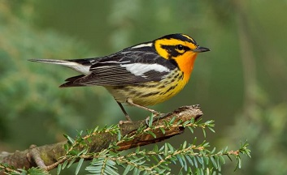

Joe Kolowski, Ph.D.

We are working here with the same dataset described in the Ovenbird demo exercise. The data were provided by Mike Hallworth, and collected at Hubbard Brook New Hampshire, USA. The full data set at Hubbard Brook had 373 point count survey locations systematically placed throughout Hubbard Brook Valley along 15 transects. Our data set includes 296 of these survey points. Point counts were conducted 4 times per year, and have been collected since 1999. Here we are working with a single year’s data. Surveys typically started at the end of May, and all 4 surveys were typically done within a month. Each point count was split into 3 consecutive “periods” of 3 minutes, 20 seconds each (so the observer spent 10 minutes at each location during a survey). These data are part of a large, long-term study focused on investigating many aspects of songbird ecology including habitat use, recruitment, species richness and abundance, and many others. In this demo we’ll be working only with the Blackburnian Warbler (BLBW). Here our goal is to assess what factors influence occupancy probability of blackburnian warblers in this landscape, while accounting for factors that may influence detection.
unmarked for single-season occupancy analysisLet’s first call the packages we’ll need in this exercise. Use install.packages if you do not have these packages already on your machine.
library(unmarked)
library(tidyverse)
library(lubridate) #for the `yday` function
Remember also when starting a new analysis to clear your environment. This is generally always a good idea, particularly in cases where you might be using models of the same names as previous analyses.
rm(list = ls())
We can bring in data using our read.csv command, with our data files stored in our course dropbox folder as opposed to on our local computer.
counts <-
read.csv('https://www.dropbox.com/s/fdotemoww8qdu8l/countData.csv?dl=1')
visits <-
read.csv('https://www.dropbox.com/s/wr961cx2lxxfssp/visitData.csv?dl=1')
siteCovs <-
read.csv('https://www.dropbox.com/s/gbrxt85jwid2t55/siteData.csv?dl=1')Since we are using the same data set from the ovenbird demonstration, we need to perform the same formatting steps to prepare the data for analysis.
Step1: Using the ovenbird demo as a guide, first pull out only the Blackburnian warbler observation from the counts object, select out the plot and replicate columns, and create a new column for counts (n) that is set to 1. Remember to keep only unique rows, since we sometimes have more than one observation within a 10 minute period. Review your new counts object to make sure everything worked properly.
Q1: How many observations of Blackburnian Warblers were recorded?
Step 2: Create a detection frame for these counts, being sure to account for visits where no observations were recorded. This requires use of the visits object. View your detection frame to make sure everything worked properly.
Step3: Our last step in data formatting will be to create a list of our survey covariates. These are stored in the visits object. But now each separate covariates needs to exist in its own data frame within a list. Each data frame should have 296 rows (for each site) and 4 columns (for each ocassion). This code should be the same as in the ovenbird demo, since these covariates are not specific to the species we are analyzing.
Our data are now ready for the unmarkedFrameOccu function which prepares our data for occupancy analysis.We need to provide three objects, the detection matrix, our site covariates data frame, and a list of dataframes for our observation/survey covariates.
Step4: Create an unmarked frame for use in our occupancy models and use summary to review
Q2: What is our naive occupancy probability for this species?
We now are ready to run some single-season occupancy models. Remember that it is best practice to first test a range of models that investigate potential hypotheses for what covariates are impacting occupancy, while using a fully general model for detection probability. Once you refine your occupancy variables you can then refine/simplify your detection covariates if possible. Use the ovenbird demo exercise as a guide. Here again, as in the ovenbird demo, you may need to use starting values if some models fail to run.
Step 5: Conduct a complete model selection and comparison work flow to arrive at a best final model describing occupancy/detection of this species.
Q3: Which covariates are important in determing probability of occupancy of this species?
Q4: What are the most important covariates in determining detection probability of this species?
Step6: Now that you have identified your best model, use the summary function to review the details of the results. Remember that you can look at just the coefficients with the coef function as well.
Q5: Review the coefficient values of your parameters. Describe the relationship between each parameter and its response variable (i.e. occupancy or detection).
Step7: Use the predict function to look at estimated probabilities of detection and occupancy based on our actual site data. Use the summary function to look at the ranges of values that are predicted for the sites.
Q6: What are the average, min and max predicted values of occupancy across our sites? How does this compare to naive occupancy?
Q7: What is our average detection probability across our sites and how does this compare to our value for ovenbird detection probability?
Q8: With this average detection probability, what is the probability of not detecting this species at a site at least once (i.e. missing it 4 times in a row) if it was actually present?
Let’s now take a graphical look at how our covariates influence occupancy and detection.
Step7: Use the predict function to predict values for detection probability, over a range of values for each important covariates. Use these predicted values to create response curves for detection covariates, and occupacy covariates. If observer is an important factor in the deteciton model, have each graph of any other detection covariates show a separate line for each observer.
Hint: If something like time of day, or day of year are important, you’ll need to figure out how to set mean or median values of these covariates (which are stored as times or dates in visits). Check back for code in the ovenbird demo that shows how we converted them to numeric values.
STEP8: Now look at how our covariates influence blackburnian occupancy. As above we need to first create a new dataframe. Create a graph representing the relationship between each of your significant occupancy covariates, and probability of occupancy.
Our ultimate goal in this analysis was to investigate the factors influencing occupancy of Blackburnian Warblers across the Hubbard Brook valley. To do this in the most robust way, we also wanted to account for imperfect detection, and we included a range of covariates to further assist us in accounting for those factors that may cause detection probability to vary across sites or site visits.
Q9: Describe in a few sentences what we have learned about Blackburnian Warblers in this landscape, with respect to both how they are detected and what influences their occupancy.
Q10: Let’s assume the Blackburnian Warbler was endangered. Think about how a manager might use this information from this analysis to better manage this population.
Q11: This analysis was simplified for this exercise, particularly with respect to the small number of covariates on occupancy. What other covariates might be interesting to test in this situation?